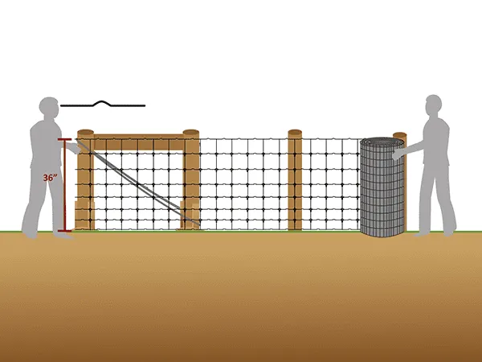
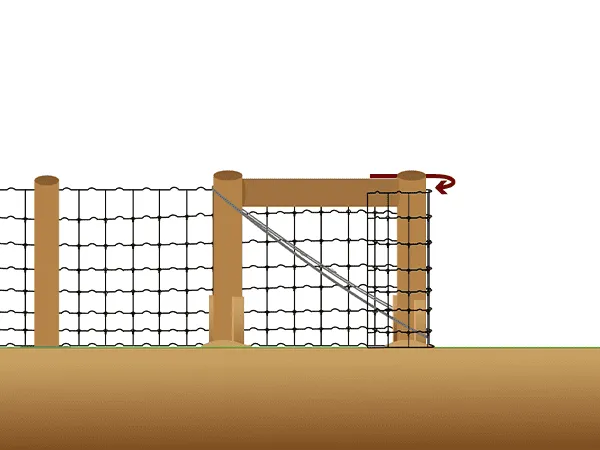
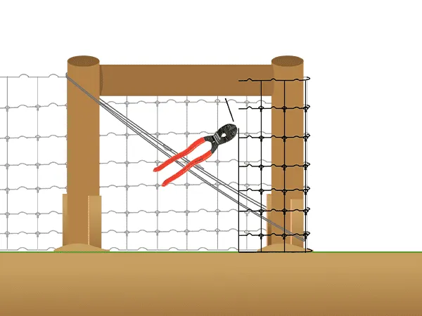
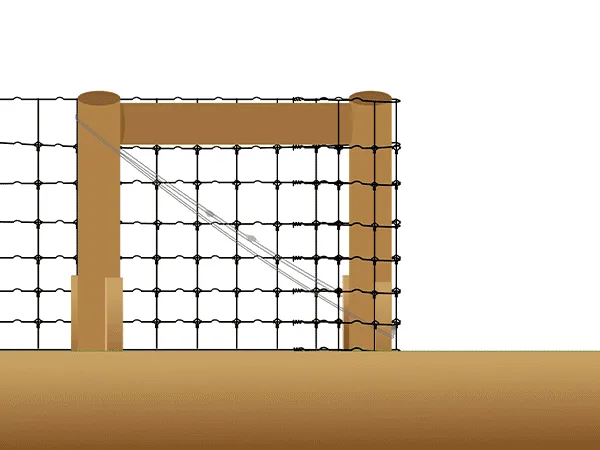
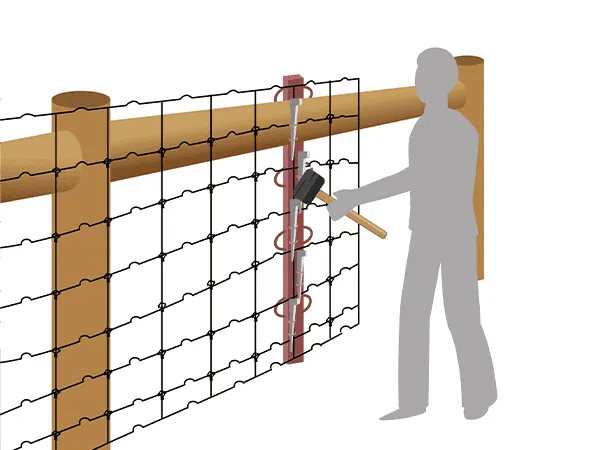
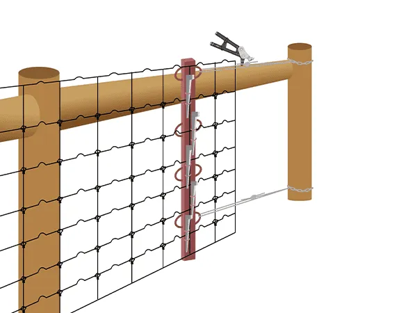
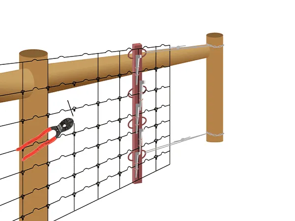
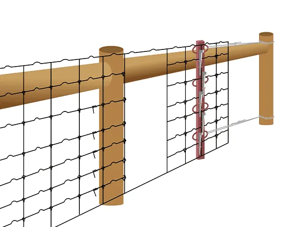
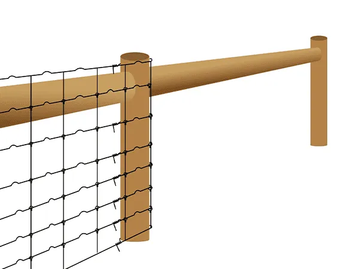
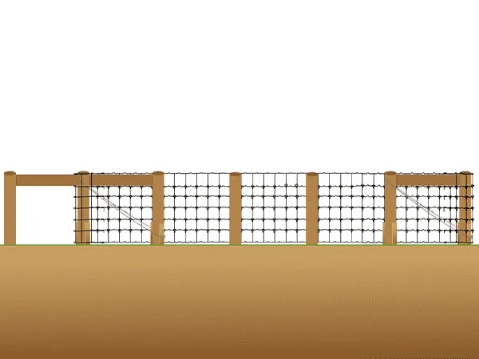

Field fence is the ideal wire mesh fencing for farms and ranches. It consists of three main components that require assembly: end posts and braces, line posts, and the wire mesh. Line posts can be either all wooden or a combination of metal T-posts with wooden posts. Below is a step-by-step guide for installing field fence for your reference.
Preparation Checklist
Materials & Tools Required
- 61" wooden posts and T-posts
- Work gloves
- Steel wire
- Three 8' brace posts
- Shovel
- Hammer
- 36" wire mesh roll
- 3/8" drill bit
- Nails
- Wooden board
- Brace pins
- Wire connectors
- Pliers
- Fencing stretcher bar
- Post driver
- Chain
- Fence stretcher board
- V-clips
Installation Steps
Follow these steps carefully to ensure proper fence installation. Each step builds upon the previous one, so take your time to complete each stage correctly.
Step 1: Unroll Wire Mesh
Unroll the 36" wire mesh along the fence line. Position it at the proper height, ensuring the bottom wire sits at ground level.

Step 2: Thread Through End Post
Thread the wire mesh through the end post. This is your starting point for the entire fence line.

Step 3: Cut Vertical Wires
Use pliers to cut 3-4 vertical wires. This allows the horizontal wires to wrap around the post for secure attachment.

Step 4: Wrap Horizontal Wires
Wrap the 2 horizontal wires around the opposite side of the post. This creates a secure anchor point.

Step 5: Apply Tension with Stretcher
Use a hammer with the fence stretcher bar and wedge/loop system to begin tensioning the wire mesh.

Step 6: Chain & Wire Tensioning
Critical Step: Install chains and steel wire for proper tensioning. This ensures the fence maintains proper tension over time.

Step 7: Cut Wires at Opposite End
At the opposite end post, use pliers to cut the vertical wires, preparing for the final attachment.

Step 8: Secure Wires at End Post
Wrap the horizontal wires around the end post to complete the secure attachment on both ends.

Step 9: Remove Tools & Trim Excess
Cut off excess wire mesh and remove the fence stretcher board and tensioning tools. The end post securing is now complete.

Step 10: Installation Complete
Your field fence installation is now complete. Verify proper tension and secure all attachments before introducing livestock.

Need quality field fence materials for your agricultural project? At Kestrel Metal, we supply premium galvanized field fence, T-posts, wooden posts, and all necessary accessories. Our experienced team provides technical support and competitive pricing with worldwide shipping. Request a Quote today—we respond within 24 hours with detailed specifications and pricing for your project.